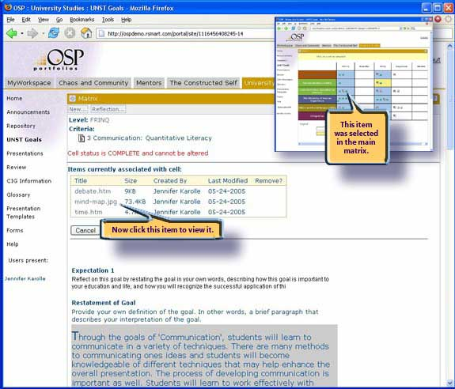

Learning Matrix
Jennifer has selected the "Communication: Quantitative Literacy Cell" at the FRINQ level. Here you can see three items associated from her repository, the results of her reflective activities and comments from her instructor. This cell has already been completed and so it is locked to protect the integrity of the review process.
- Single-click access to view the items from her repository associated with this cell
- Summary of reflective work and feedback
- Completed and locked for review integrity
The example we have seen in this Learning Matrix is how the tool has been configured to meet one of Portland State University's objectives. The goals, levels, expectations, guidance, reflective prompts, and even the colors are designed to be customized for a wide range of applications.
